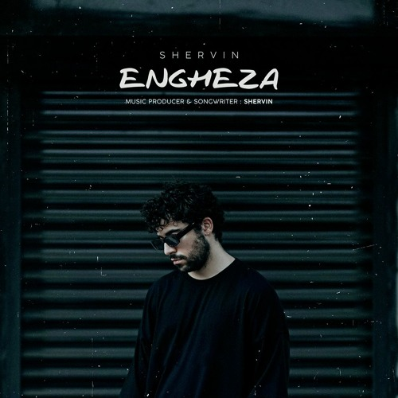
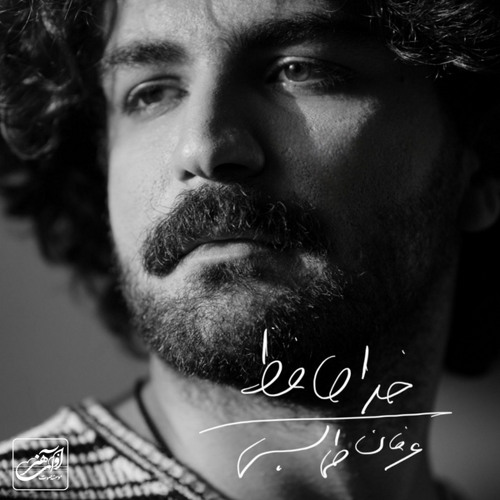
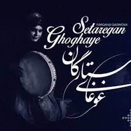
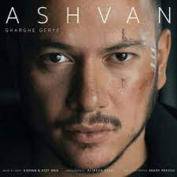
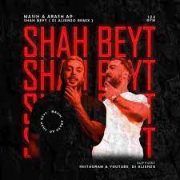
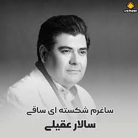

Pop Music
Home
about us
Login
اهنگ از
علی یاسینی
به نام
اگه به من بود
سال انتشار:1397

اهنگ از
شروین حاجی پور
به نام
انقضا
سال انتشار:1401

اهنگ از
عرفان طهماسبی
به نام
خداحافظ
سال انتشار:1402
اهنگ از
مرتضی پاشایی
به نام
اسمش عشقه
سال انتشار:1400

اهنگ از
محمد رضا اصفحانی
به نام
غوغا ستارگان
سال انتشار:1392
اهنگ از
حامیم
به نام
روز سفید
سال انتشار:1400

اهنگ از
اشوان
به نام
غرق گریه
سال انتشار:1400

اهنگ از
مسیح و آرش
به نام
شاه بیت
سال انتشار:1399
اهنگ از
علی یاسینی
به نام
تبر
سال انتشار:1400

اهنگ از
سالار عقیلی
به نام
طاقتم ده
سال انتشار:1397
اهنگ از
شارومین
به نام
من
سال انتشار:1402
اهنگ از
راغب
به نام
تو رو که دیدم
سال انتشار:1401
Go up